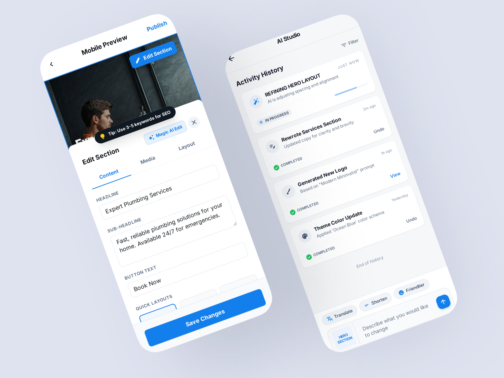

Breezy AI Website Editor
Designing hybrid interfaces that balance generative LLM capabilities with deterministic user control.

The Challenge: Probabilistic Design
Generative AI is inherently probabilistic. When a user prompts an AI to "build a portfolio website," the underlying LLM generates code and layout structures that are highly variable. Traditional UX design relies on deterministic outcomes (click a button, get an exact result). My challenge at Breezy was bridging this gap: creating a user experience that harnesses the creative power of AI while giving the user predictable, granular control over the final output.
Steerability & Hybrid Interfaces
The "magic prompt box" is a flawed design pattern for complex creation tools. Users quickly hit a wall when they want to tweak a specific element but are forced to re-prompt the entire layout, risking unwanted changes to other areas.
To solve this, I designed a Hybrid Interaction Model:
- Macro-generation via Chat: Users use natural language for broad strokes (e.g., "Generate a dark-mode landing page for a coffee shop").
- Micro-editing via Direct Manipulation: Once the layout is generated, users can point, click, and drag elements on a traditional WYSIWYG canvas. The AI steps back, and deterministic control takes over.
- Contextual Prompting: If a user wants AI help on a specific component, they can highlight just that section and prompt locally (e.g., "Make this hero text punchier"), preserving the rest of the layout's state.

Designing for Latency & Streaming
LLMs are slow. Waiting 10-15 seconds for a full layout to generate is an eternity in UX. To mitigate perceived latency, I collaborated closely with the engineering team to design a progressive streaming architecture.
Instead of a static loading spinner, the interface streams the layout incrementally. First, the structural skeleton loads, followed by typography, then colors, and finally imagery. This progressive disclosure not only reduces perceived wait time but also allows users to interrupt and steer the generation mid-flight if it's heading in the wrong direction.
"Trust in AI tools isn't built through perfection; it's built through predictability, steerability, and graceful error recovery."
Error Recovery & Hallucinations
When generating code, LLMs will inevitably hallucinate or break CSS grid layouts. I implemented a robust version control and rollback system deeply integrated into the UX. Every AI generation acts as a non-destructive branch. If the AI breaks the layout, users have a highly visible "undo generation" path, ensuring they never feel trapped by a bad output.
The Outcome
By treating the AI as a collaborative partner rather than an infallible oracle, we dramatically reduced user frustration. The hybrid interface empowered users to move from blank canvas to published site in minutes, while retaining the pixel-perfect control expected from professional design tools.